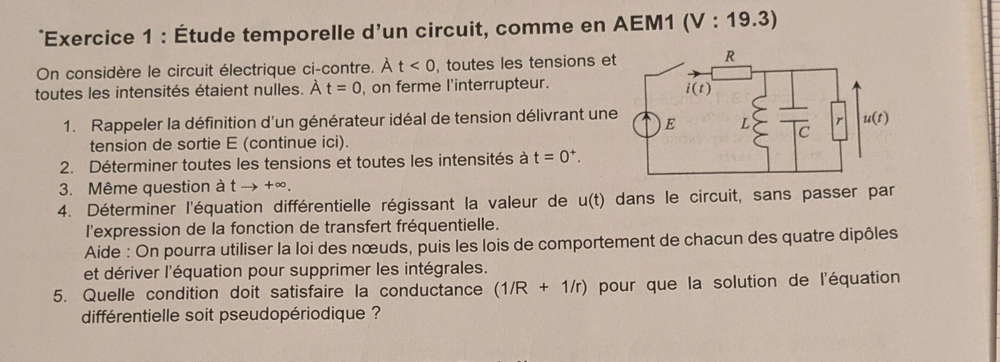
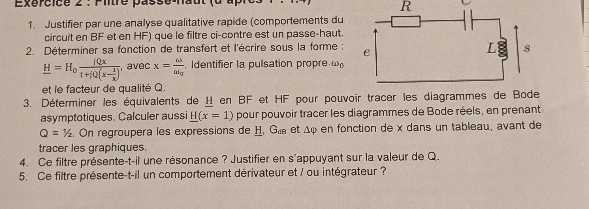
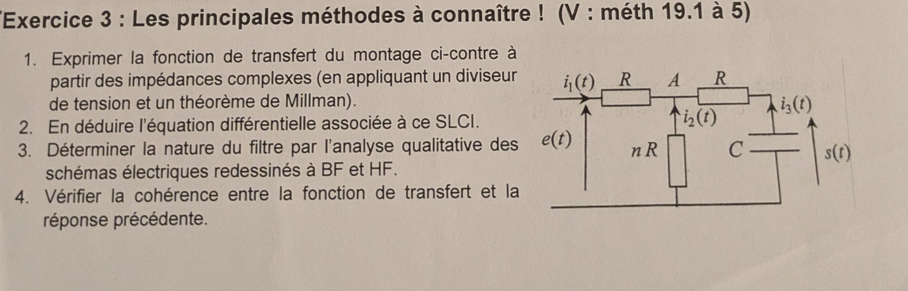
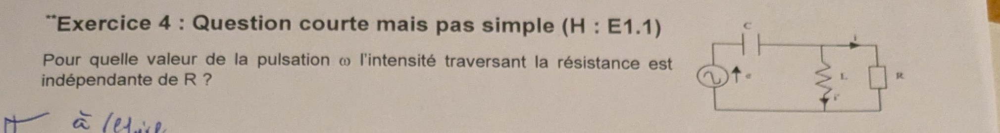
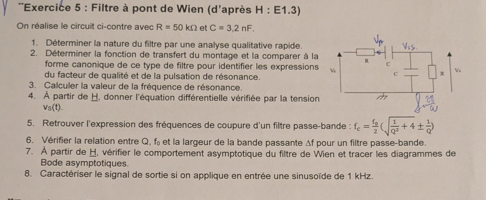
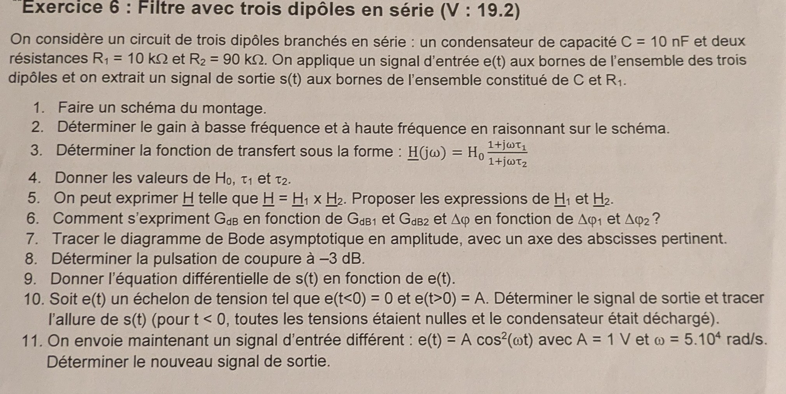

Chapitre 1 — Filtres analogiques passifs
Système Linéaire Continu Invariant (SLCI), description temporelle par équation différentielle et description fréquentielle par fonction de transfert harmonique (FTH). Cours complet, 5 questions résolues pas à pas, diagramme de Bode interactif (passe-bande RLC) et TP1 corrigé. AM2 · P2030 · Semestre 3 — cours de D. Courtois.
1. Résumé de cours — le SLCI
1.1 Le filtre analogique passif, un exemple de SLCI
Un filtre est un système qui transforme un signal d'entrée (ou forçage) \(e(t)\) en un signal de sortie (ou réponse) \(s(t)\), cette transformation dépendant en général de la fréquence. En électronique, \(e\) et \(s\) sont le plus souvent des tensions \(u\) (en V), plus rarement des intensités \(i\) (en A).
Les filtres analogiques passifs sont des quadripôles constitués de dipôles linéaires passifs \(R,\,L,\,C\). Leurs lois de comportement \(u=f(i)\) sont régies par des équations différentielles linéaires à coefficients constants. « Passif » ⇒ la puissance moyenne en sortie est toujours \(\le\) la puissance moyenne en entrée (pas d'apport d'énergie).
- Linéaire — vérifie le théorème de superposition : si \(e_1\!\to\!s_1\) et \(e_2\!\to\!s_2\), alors \(e=K_1e_1+K_2e_2 \;\to\; s=K_1s_1+K_2s_2\).
- Continu — les grandeurs sont des fonctions continues du temps (= analogique).
- Invariant — comportement inchangé dans le temps (\(\forall t\), même \(s(t)\) pour un même \(e(t)\)).
1.2 Description temporelle : une ED linéaire à coefficients constants
Un montage \(R,L,C\) est un SLCI décrit par l'équation différentielle générale :
\[ D_0\,s + D_1\frac{ds}{dt} + \cdots + D_n\frac{d^{\,n}s}{dt^{\,n}} \;=\; N_0\,e + N_1\frac{de}{dt} + \cdots + N_m\frac{d^{\,m}e}{dt^{\,m}} \]\(n\) est l'ordre du filtre (ordre maximal des dérivées présentes).
1.3 Description fréquentielle : la fonction de transfert harmonique (FTH)
À un signal sinusoïdal \(u(t)=U_m\cos(\omega t+\varphi)\) on associe la notation complexe \(\underline{u}=U_m e^{\,j(\omega t+\varphi)}\), avec \(u(t)=\mathcal{R}e(\underline{u})\) et l'amplitude complexe \(\underline{U}=U_m e^{\,j\varphi}\).
La réponse est entièrement décrite par la fonction de transfert harmonique :
\[ \underline H=\frac{\underline s}{\underline e}=\frac{\underline S}{\underline E} \qquad\Longrightarrow\qquad |\underline H|=\frac{S_m}{E_m}\ \text{(gain)}\ ,\qquad \arg(\underline H)=\Delta\varphi=\varphi_s-\varphi_e\ \text{(déphasage)} \]Rappels : \(\ \underline Z_R=R\ ,\quad \underline Z_L=jL\omega\ ,\quad \underline Z_C=\dfrac{1}{jC\omega}\).
Formes canoniques à reconnaître
Avec la pulsation réduite \(x=\dfrac{\omega}{\omega_0}\), gain statique \(H_0\) et facteur de qualité \(Q\) :
| Type de filtre | FTH canonique |
|---|---|
| Passe-bas 1ᵉʳ ordre | \(\displaystyle H_0\,\frac{1}{1+jx}\) |
| Passe-haut 1ᵉʳ ordre | \(\displaystyle H_0\,\frac{jx}{1+jx}\) |
| Passe-bas 2ᵈ ordre | \(\displaystyle H_0\,\frac{1}{1+j\frac{x}{Q}-x^2}\) |
| Passe-bande 2ᵈ ordre | \(\displaystyle H_0\,\frac{j\frac{x}{Q}}{1+j\frac{x}{Q}-x^2} \;=\;H_0\,\frac{1}{1+jQ\!\left(x-\frac1x\right)}\) |
| Passe-haut 2ᵈ ordre | \(\displaystyle H_0\,\frac{-x^2}{1+j\frac{x}{Q}-x^2} \;=\;H_0\,\frac{jQx}{1+jQ\!\left(x-\frac1x\right)}\) |
Diagrammes de Bode
- Gain (dB) : \(\;G_{dB}=20\log|\underline H|\;\) (donc \(|\underline H|=10^{\,G_{dB}/20}\)), en fonction de \(\omega\) ou de \(x\), abscisse logarithmique.
- Phase : \(\;\arg(\underline H)=\Delta\varphi=\varphi_s-\varphi_e\;\) en fonction de \(\omega\) ou de \(x\).
1.4 Passage temporel ↔ fréquentiel
En régime sinusoïdal, dériver revient à multiplier par \(j\omega\) : \(\ \dfrac{d}{dt}\leftrightarrow \times\, j\omega\). En posant \(p=j\omega\) on obtient la fonction de transfert opérationnelle. L'ED devient une équation polynomiale :
\[ D_0\,\underline s+(j\omega)D_1\underline s+\cdots+(j\omega)^nD_n\underline s =N_0\,\underline e+(j\omega)N_1\underline e+\cdots+(j\omega)^mN_m\underline e \] \[ \underline H=\frac{\underline s}{\underline e} =\frac{N_0+(j\omega)N_1+\cdots+(j\omega)^mN_m}{D_0+(j\omega)D_1+\cdots+(j\omega)^nD_n} \]2. Questions du cours — résolues pas à pas
Toutes les questions portent sur le même montage : une résistance \(R\) en série, puis un condensateur \(C\) et une bobine \(L\) en parallèle (« bouchon » \(LC\)) reliés à la masse ; la sortie \(s\) est prise aux bornes de ce dipôle parallèle.
Retrouver le jeu de coefficients de l'ED du montage ci-dessus.
1) Cadre et notations
On note \(s\) la tension de sortie (aux bornes du parallèle \(C\parallel L\), donc aussi la tension commune à \(C\) et \(L\)). Le courant qui sort de \(R\) se partage entre la branche capacitive \(i_C\) et la branche inductive \(i_L\).
2) Loi des nœuds
Le courant dans \(R\) vaut \(i_R=\dfrac{e-s}{R}\). Au nœud de sortie :
\[ i_R=i_C+i_L \qquad\Longrightarrow\qquad \frac{e-s}{R}=i_C+i_L \]3) Lois de comportement des dipôles
On remplace les intensités par des tensions (la grandeur intéressante) :
\[ i_C=C\,\frac{ds}{dt}\ ,\qquad s=L\,\frac{di_L}{dt}\Rightarrow i_L=\frac1L\!\int s\,dt \] \[ \frac{e-s}{R}=C\frac{ds}{dt}+\frac1L\!\int s\,dt \]4) Multiplication par \(R\) puis dérivation (pour supprimer l'intégrale)
\[ e-s=RC\frac{ds}{dt}+\frac{R}{L}\!\int s\,dt \] \[ \frac{de}{dt}-\frac{ds}{dt}=RC\frac{d^2s}{dt^2}+\frac{R}{L}\,s \]5) Regroupement sous la forme \(D_0s+D_1\dot s+D_2\ddot s=N_0e+N_1\dot e\)
\[ \boxed{\,RC\,\frac{d^2s}{dt^2}+\frac{ds}{dt}+\frac{R}{L}\,s=\frac{de}{dt}\,} \]Retrouver la FTH et l'écrire sous la forme \(\displaystyle \underline H=\frac{1}{1+jQ\!\left(\frac{\omega}{\omega_0}-\frac{\omega_0}{\omega}\right)}\).
1) Impédance du parallèle \(C\parallel L\)
\[ \underline Z_{p}=\frac{\underline Z_C\,\underline Z_L}{\underline Z_C+\underline Z_L} =\frac{\frac{1}{jC\omega}\cdot jL\omega}{\frac{1}{jC\omega}+jL\omega} =\frac{\frac{L}{C}}{\frac{1-LC\omega^2}{jC\omega}} =\frac{jL\omega}{1-LC\omega^2} \]2) Pont diviseur de tension
\[ \underline H=\frac{\underline Z_p}{R+\underline Z_p} =\frac{jL\omega}{R\left(1-LC\omega^2\right)+jL\omega} \]3) Mise sous forme canonique — on divise haut et bas par \(jL\omega\)
\[ \underline H=\frac{1}{1+\dfrac{R(1-LC\omega^2)}{jL\omega}} =\frac{1}{1+jR\!\left(C\omega-\dfrac{1}{L\omega}\right)} \](on a utilisé \(\tfrac1j=-j\), d'où \(\tfrac{R}{jL\omega}=-j\tfrac{R}{L\omega}\) et \(-\tfrac{RC\omega}{j}=+jRC\omega\)).
4) Identification de \(\omega_0\) et \(Q\)
On veut faire apparaître \(\dfrac{\omega}{\omega_0}-\dfrac{\omega_0}{\omega}\). Avec \(\omega_0=\dfrac{1}{\sqrt{LC}}\) on a \(RC\omega_0=\dfrac{R}{L\omega_0}=R\sqrt{\tfrac{C}{L}}\), donc :
\[ R\!\left(C\omega-\frac{1}{L\omega}\right)=R\sqrt{\tfrac{C}{L}}\left(\frac{\omega}{\omega_0}-\frac{\omega_0}{\omega}\right) \]Identifier le filtre de Q2 et tracer ses diagrammes de Bode en gain et en phase pour \(Q=5\) et \(Q=0{,}5\).
Filtre : passe-bande 2ᵈ ordre, \(|\underline H|_{\max}=1\) en \(x=1\) (\(\omega=\omega_0\)). Avec \(x=\omega/\omega_0\) :
\[ G_{dB}(x)=20\log|\underline H|=-10\log\!\Big[1+Q^2\big(x-\tfrac1x\big)^2\Big]\ ,\qquad \varphi(x)=-\arctan\!\Big[Q\big(x-\tfrac1x\big)\Big] \]Points remarquables
| Régime | \(x\to 0\) (BF) | \(x=1\) (résonance) | \(x\to\infty\) (HF) |
|---|---|---|---|
| Gain | \(\approx x/Q\) → pente \(+20\) dB/déc | \(0\) dB (max) | \(\approx 1/(Qx)\) → pente \(-20\) dB/déc |
| Phase | \(+90^\circ\) | \(0^\circ\) | \(-90^\circ\) |
- \(Q=5\) : résonance marquée et étroite (filtre sélectif), bande passante réduite \(\Delta x=1/Q=0{,}2\).
- \(Q=0{,}5\) : résonance plate et large (peu sélectif), bande passante \(\Delta x=1/Q=2\).
Rappeler \(\log(1),\log(2),\log(5),\log(10)\), illustrer la correspondance axes \(x\) ↔ \(\log(x)\), puis montrer qu'à la coupure le gain vaut le gain max \(-3\) dB.
1) Valeurs de référence (log décimal)
| \(x\) | 1 | 2 | 5 | 10 |
|---|---|---|---|---|
| \(\log x\) | 0 | ≈ 0,301 | ≈ 0,699 | 1 |
Astuce : \(\log5=\log\frac{10}{2}=1-\log2\), et \(\log2+\log5=1\). Une décade (\(\times10\)) correspond à \(+1\) sur l'axe \(\log\) ; le milieu géométrique visuel d'une décade tombe vers \(x\approx3{,}16\) (\(\log\approx0{,}5\)).
2) Le gain « –3 dB » à la pulsation de coupure
Par définition, aux pulsations de coupure le gain (linéaire) vaut \(\dfrac{1}{\sqrt2}\) du gain maximal. En décibels :
\[ 20\log\!\left(\frac{|\underline H|_{\max}}{\sqrt2}\right) =20\log|\underline H|_{\max}-20\log\sqrt2 =G_{\max}-20\times\frac{\log 2}{2} \] \[ 20\times\frac{0{,}301}{2}\approx 3{,}01\ \text{dB} \]Retrouver l'équation différentielle de Q1 à partir de la FTH de Q2.
1) Repartir de la forme « impédances » de Q2
\[ \underline H=\frac{\underline s}{\underline e} =\frac{jL\omega}{R(1-LC\omega^2)+jL\omega} \]On « croise » (produit en croix) :
\[ \underline s\Big[R+jL\omega-RLC\omega^2\Big]=jL\omega\,\underline e \]2) Traduction \(j\omega\to \dfrac{d}{dt}\), \((j\omega)^2\to\dfrac{d^2}{dt^2}\)
\[ R\,s+L\frac{ds}{dt}+RLC\frac{d^2s}{dt^2}=L\frac{de}{dt} \]3) Division par \(L\)
\[ \boxed{\,RC\frac{d^2s}{dt^2}+\frac{ds}{dt}+\frac{R}{L}s=\frac{de}{dt}\,} \]3. Diagramme de Bode interactif
Tracé « live » du passe-bande \(\;\underline H=\dfrac{1}{1+jQ\left(x-\frac1x\right)}\;\) avec \(x=\omega/\omega_0\). Bouge \(Q\) pour voir la résonance s'affiner (grand \(Q\), sélectif) ou s'aplatir (petit \(Q\)). Les préréglages reproduisent la Q3.
Banc de tracé — passe-bande 2ᵈ ordre
4. TP1 — étude expérimentale de filtres, corrigé
Partie 1 — filtre passe-bande RLC série
Montage : GBF → \(R\), \(L\), \(C\) en série ; l'oscilloscope mesure \(e\) sur CH1 (aux bornes du GBF) et \(s\) sur CH2 aux bornes de \(R\) (masses communes).
La sortie aux bornes de \(R\) donne \(\underline H=\dfrac{R}{R+j(L\omega-\frac{1}{C\omega})}\), maximale quand la partie imaginaire s'annule ⇒ résonance d'intensité :
\[ L\omega_0=\frac{1}{C\omega_0}\ \Longrightarrow\ \boxed{\omega_0=\frac{1}{\sqrt{LC}}}\ ,\qquad \boxed{Q=\frac{1}{R}\sqrt{\frac{L}{C}}} \]1) Pulsation cible
\[ \omega_0=2\pi f_0=2\pi(2000)=1{,}257\times10^{4}\ \text{rad·s}^{-1} \]2) Condensateur (depuis \(\omega_0=1/\sqrt{LC}\))
\[ C=\frac{1}{L\,\omega_0^{2}}=\frac{1}{0{,}25\times(1{,}257\times10^4)^2} \approx \boxed{2{,}53\times10^{-8}\ \text{F}=25{,}3\ \text{nF}} \]3) Résistance (depuis \(Q=\frac1R\sqrt{L/C}\))
\[ \sqrt{\tfrac{L}{C}}=\sqrt{\tfrac{0{,}25}{2{,}53\times10^{-8}}}\approx 3{,}14\times10^3\ \Omega \quad(\,=L\omega_0\,) \] \[ R=\frac{1}{Q}\sqrt{\tfrac{L}{C}}=\frac{3{,}14\times10^3}{0{,}5} \approx \boxed{6{,}28\ \text{k}\Omega} \]À la résonance, \(L\omega_0=1/C\omega_0\) : l'impédance série se réduit à \(R\), la tension de sortie \(=\) tension d'entrée.
En mode XY l'oscilloscope trace \(s\) en fonction de \(e\). Le déphasage produit une ellipse ; à la résonance \(\Delta\varphi=0\) ⇒ l'ellipse dégénère en une droite. Repérer l'instant où la figure devient une droite parfaite localise \(f_0\) bien plus précisément que la lecture d'un maximum (plat près du sommet).
Intensité dans le circuit à \(f_0\)
À la résonance \(Z=R\), donc \(I_m=\dfrac{E_m}{R}\) :
\[ I_m=\frac{3{,}0}{6{,}28\times10^3}\approx \boxed{4{,}8\times10^{-4}\ \text{A}=0{,}48\ \text{mA}} \]Aux coupures : \(G=\dfrac{1}{\sqrt2}\approx0{,}707\) et \(\Delta\varphi=\pm45^\circ\) (\(+45^\circ\) en \(f_{cB}\), \(-45^\circ\) en \(f_{cH}\)).
Bande passante
Propriété du 2ᵈ ordre passe-bande : \(\ \Delta f=\dfrac{f_0}{Q}\).
\[ \Delta f=\frac{2000}{0{,}5}=\boxed{4000\ \text{Hz}} \]Avec \(f_{cB}\,f_{cH}=f_0^2\) et \(f_{cH}-f_{cB}=\Delta f\), on résout \(f_c=f_0\!\left(\mp\frac{1}{2Q}+\sqrt{1+\frac{1}{4Q^2}}\right)\) :
\[ f_{cB}\approx 0{,}83\ \text{kHz}\ ,\qquad f_{cH}\approx 4{,}83\ \text{kHz} \]À savoir retrouver : les expressions de \(f_{cB}\) et \(f_{cH}\).
Relever plusieurs points pertinents autour de \(f_0\) (typiquement \(f_{cB}\), \(f_0/2\), \(f_0\), \(2f_0\), \(f_{cH}\)…), avec \(x=f/f_0\), et reporter dans un tableur (fichier TP1.xlsx fourni). Astuce oscillo : menu Measure / CH2 / maximum et phase pour lire directement \(S_m\) et \(\Delta\varphi\) — beaucoup plus rapide qu'à la main.
Partie 2 — autres filtres
On ne change que \(Q\) : \(R=\dfrac1Q\sqrt{L/C}=\dfrac{3{,}14\times10^3}{5}\approx \boxed{6{,}3\times10^2\ \Omega\ (\approx628\ \Omega)}\). Bande passante \(\Delta f=\dfrac{f_0}{Q}=\dfrac{2000}{5}=\boxed{400\ \text{Hz}}\) ⇒ coupures \(f_{cB}\approx1{,}81\) kHz, \(f_{cH}\approx2{,}21\) kHz.
Modification : retirer la bobine \(L\) (on garde \(R\) et \(C\) en série) et prendre la sortie aux bornes de \(C\). On obtient un passe-bas du 1ᵉʳ ordre \(\underline H=\dfrac{1}{1+jRC\omega}\), de pulsation de coupure :
\[ \omega_c=\frac{1}{RC}\ \Longrightarrow\ f_c=\frac{1}{2\pi RC} \]Grandeur à modifier pour \(f_c=2\) kHz (à \(C=25{,}3\) nF fixé)
\[ R=\frac{1}{2\pi f_c\,C}=\frac{1}{2\pi(2000)(2{,}53\times10^{-8})} \approx \boxed{3{,}1\ \text{k}\Omega} \]Mesures Bode : gain plat (\(0\) dB) en BF puis pente \(-20\) dB/déc ; phase \(0^\circ\to-90^\circ\) (passant par \(-45^\circ\) en \(f_c\)). Pour les déphasages en très basses / très hautes fréquences, exploiter la méthode de Lissajous (mode XY) si la lecture directe est difficile.
Les 6 exercices du TD1 corrigés un par un. Pour chacun, l'énoncé (photo) est placé juste au-dessus de sa correction détaillée pas à pas : régime transitoire 2ᵈ ordre, passe-haut, méthodes (Millman/diviseur), pont de Wien, filtre avance/retard — avec diagrammes de Bode tracés. AM2 · P2030 · Semestre 3 — D. Courtois.

1) Générateur idéal de tension
Un générateur idéal de tension impose entre ses bornes une tension \(E\) indépendante du courant qu'il débite : sa résistance interne est nulle, sa caractéristique \(u=E\) est une droite horizontale. Ici \(E\) est continue (constante dans le temps).
2) Tensions et intensités à \(t=0^{+}\)
On utilise les continuités : le courant dans une bobine et la tension aux bornes d'un condensateur ne peuvent pas sauter.
\[ i_L(0^+)=i_L(0^-)=0 \qquad,\qquad u_C(0^+)=u_C(0^-)=0 \]Or \(C\), \(L\) et \(r\) sont en parallèle : \(u=u_C\). Donc \(\;u(0^+)=0\).
On en déduit tout le reste à \(t=0^+\)
- Tension de sortie : \(\;u(0^+)=0\).
- Courant dans \(r\) : \(\;i_r=\dfrac{u}{r}=0\).
- Courant dans \(L\) : \(\;i_L(0^+)=0\).
- Maille d'entrée : \(E=R\,i+u \Rightarrow i(0^+)=\dfrac{E-0}{R}=\dfrac{E}{R}\).
- Loi des nœuds \(i=i_L+i_C+i_r \Rightarrow i_C(0^+)=\dfrac{E}{R}\).
- Tension aux bornes de \(R\) : \(u_R=R\,i=E\).
3) Régime permanent \(t\to+\infty\)
En continu établi : le condensateur est ouvert (\(i_C=0\)), la bobine est un court-circuit (\(u_L=0\)). Comme \(u=u_L=0\) :
- \(u(\infty)=0\), donc \(i_r=u/r=0\) et \(i_C=0\).
- Maille : \(E=R\,i+u=R\,i \Rightarrow i(\infty)=\dfrac{E}{R}\).
- Nœuds : \(i_L(\infty)=i=\dfrac{E}{R}\).
4) Équation différentielle en \(u(t)\)
Loi des nœuds au nœud de sortie
\[ i=i_C+i_L+i_r \quad\text{avec}\quad i=\frac{E-u}{R} \]Lois de comportement (on garde \(u\))
\[ i_C=C\frac{du}{dt}\ ,\quad i_r=\frac{u}{r}\ ,\quad i_L=\frac1L\!\int u\,dt \] \[ \frac{E-u}{R}=C\frac{du}{dt}+\frac{u}{r}+\frac1L\!\int u\,dt \]On dérive (aide de l'énoncé) — \(E\) constante disparaît
\[ -\frac1R\frac{du}{dt}=C\frac{d^2u}{dt^2}+\frac1r\frac{du}{dt}+\frac1L\,u \]On regroupe
\[ \boxed{\,C\frac{d^2u}{dt^2}+\Big(\frac1R+\frac1r\Big)\frac{du}{dt}+\frac1L\,u=0\,} \]C'est une ED homogène du 2ᵈ ordre (le forçage a disparu : cohérent avec \(u(0^+)=u(\infty)=0\)). Forme canonique \(\ddot u+\dfrac{\omega_0}{Q}\dot u+\omega_0^2u=0\) avec
\[ \omega_0=\frac{1}{\sqrt{LC}}\ ,\qquad \frac{\omega_0}{Q}=\frac1C\Big(\frac1R+\frac1r\Big) \ \Rightarrow\ Q=\frac{1}{\frac1R+\frac1r}\sqrt{\frac{C}{L}} \]5) Condition de régime pseudopériodique
Équation caractéristique \(C\,x^2+\big(\tfrac1R+\tfrac1r\big)x+\tfrac1L=0\), de discriminant
\[ \Delta=\Big(\frac1R+\frac1r\Big)^2-\frac{4C}{L} \]Le régime est pseudopériodique (racines complexes, oscillations amorties) ssi \(\Delta<0\) :

1) Analyse qualitative → passe-haut
- BF (\(\omega\to0\)) : \(C\) se comporte comme un interrupteur ouvert (\(Z_C\to\infty\)) et \(L\) comme un fil (\(Z_L\to0\)). La sortie, prise sur \(L\) (fil), est \(\approx0\).
- HF (\(\omega\to\infty\)) : \(C\) est un fil (\(Z_C\to0\)), \(L\) un interrupteur ouvert (\(Z_L\to\infty\)) : presque toute la tension se retrouve sur \(L\), \(s\approx e\).
2) Fonction de transfert
Diviseur de tension (série)
\[ \underline H=\frac{\underline Z_L}{\underline Z_R+\underline Z_C+\underline Z_L} =\frac{jL\omega}{R+\dfrac{1}{jC\omega}+jL\omega} \]On multiplie haut et bas par \(jC\omega\)
\[ \underline H=\frac{-LC\omega^2}{1-LC\omega^2+jRC\omega} \]Forme canonique — on pose \(\omega_0=\dfrac{1}{\sqrt{LC}}\), \(x=\dfrac{\omega}{\omega_0}\)
Alors \(LC\omega^2=x^2\) et \(RC\omega=RC\omega_0\,x=\dfrac{x}{Q}\) en posant \(\dfrac1Q=RC\omega_0=R\sqrt{\tfrac{C}{L}}\). En factorisant \( \tfrac{jx}{Q}\) au dénominateur on obtient exactement la forme demandée :
3) Équivalents BF / HF, valeur en \(x=1\), tableau (\(Q=\tfrac12\))
\[ |\underline H|=\frac{x^2}{\sqrt{(1-x^2)^2+(x/Q)^2}}\ ,\qquad \varphi=90^\circ-\arg\!\big(1-x^2+j\tfrac{x}{Q}\big) \]| Régime | \(\underline H\) approché | \(G_{dB}\) | \(\Delta\varphi\) |
|---|---|---|---|
| BF \(x\ll1\) | \(\underline H\approx -x^2=(jx)^2\) | \(40\log x\) → pente +40 dB/déc | \(+180^\circ\) |
| \(x=1\) | \(\underline H=jQ=j/2\) | \(20\log\tfrac12=\mathbf{-6\ dB}\) | \(+90^\circ\) |
| HF \(x\gg1\) | \(\underline H\approx 1\) | \(0\ dB\) | \(0^\circ\) |
4) Résonance ?
Un pic (gain > gain HF) n'apparaît que si \(Q>\dfrac{1}{\sqrt2}\approx0{,}707\). Ici on prend \(Q=\dfrac12<\dfrac{1}{\sqrt2}\).
5) Comportement dérivateur / intégrateur ?
- En BF : \(\underline H\approx(jx)^2\) ⇒ comportement doublement dérivateur (\(s\propto \mathrm d^2e/\mathrm dt^2\), pente +40 dB/déc, phase \(+180^\circ\)).
- En HF : \(\underline H\to1\) ⇒ simple suiveur (gain unité), ni dérivateur ni intégrateur.

1) Fonction de transfert (Millman + diviseur)
Millman au nœud \(B\) (relié à \(A\) par \(R\), à la masse par \(C\))
\[ \underline v_B=\frac{\underline v_A/R}{\,1/R+jC\omega\,}=\frac{\underline v_A}{1+jRC\omega} \]Millman au nœud \(A\) (relié à \(e\) par \(R\), masse par \(nR\), à \(B\) par \(R\))
\[ \underline v_A=\frac{\dfrac{e}{R}+\dfrac{\underline v_B}{R}}{\dfrac1R+\dfrac{1}{nR}+\dfrac1R} =\frac{n\,(e+\underline v_B)}{2n+1} \]On élimine \(\underline v_A\) avec \(\underline v_A=(1+jRC\omega)\,\underline v_B\)
\[ (2n+1)(1+jRC\omega)\underline v_B=n\,e+n\,\underline v_B \;\Rightarrow\; \big[(n+1)+(2n+1)jRC\omega\big]\underline v_B=n\,e \]2) Équation différentielle associée
\(\underline H=\dfrac{s}{e}=\dfrac{H_0}{1+j\tau\omega}\) avec \(\tau=\dfrac{(2n+1)RC}{n+1}\). On « croise » puis \(j\omega\to\dfrac{d}{dt}\) :
\[ \boxed{\ (2n+1)RC\,\frac{ds}{dt}+(n+1)\,s=n\,e\ } \]3) Nature par schémas redessinés BF / HF
- BF : \(C\) ouvert ⇒ aucun courant dans la 2ᵈ \(R\) ⇒ \(v_B=v_A\) ; \(A\) est un simple diviseur \(R/nR\) : \(s=\dfrac{nR}{R+nR}\,e=\dfrac{n}{n+1}\,e\). Gain \(=H_0\ne0\).
- HF : \(C\) court-circuité ⇒ \(v_B=0\) ⇒ \(s=0\).
4) Cohérence
\(\underline H(\omega\!\to\!0)=\dfrac{n}{n+1}=H_0\) et \(\underline H(\omega\!\to\!\infty)\to0\) : identiques aux limites trouvées sur les schémas. Un seul pôle ⇒ pente unique \(-20\) dB/déc. Tout est cohérent.

Question : pour quelle pulsation \(\omega\) l'intensité \(i\) traversant \(R\) est-elle indépendante de \(R\) ?
Mise en équation
La source \(e\) alimente, à travers \(C\) (série), le parallèle \(L\parallel R\). Notons \(V\) la tension aux bornes du parallèle ; alors \(i=\dfrac{V}{R}\) et, par diviseur de tension, \(V=e\,\dfrac{\underline Z_p}{\underline Z_C+\underline Z_p}\) avec \(\underline Z_p=\dfrac{jL\omega\,R}{R+jL\omega}\).
On calcule \(i\) et on simplifie (multiplier par \(jC\omega\))
\[ i=\frac{V}{R}=\frac{e\;jL\omega}{\,\dfrac{R+jL\omega}{jC\omega}+jL\omega R\,} =\frac{-\,e\,LC\omega^2}{\,R\,(1-LC\omega^2)+jL\omega\,} \]Rendre \(i\) indépendant de \(R\)
\(R\) n'apparaît qu'au dénominateur, dans le terme \(R\,(1-LC\omega^2)\). Il disparaît ssi ce facteur s'annule :
\[ 1-LC\omega^2=0 \quad\Longrightarrow\quad \boxed{\ \omega=\omega_0=\frac{1}{\sqrt{LC}}\ } \]
1) Nature du filtre (analyse qualitative)
Étape 1 : lire le montage
- En haut, le bras série : \(R\) puis \(C\) l'un après l'autre.
- Vers la masse, le bras parallèle : \(R\) et \(C\) côte à côte. La sortie \(v_s\) est prise à ses bornes.
Étape 2 : comment se comporte un condensateur
En haute fréquence (\(\omega\to\infty\)) : \(Z_C\to0\), le condensateur est un fil.
Étape 3 : en basse fréquence
Le \(C\) du bras série est ouvert : aucun courant n'arrive jusqu'à la sortie.
\[ v_{s,BF} = 0 \]Étape 4 : en haute fréquence
Le \(C\) du bras parallèle devient un fil : il relie directement la sortie à la masse.
\[ v_{s,HF} = 0 \]2) Fonction de transfert et forme canonique
Étape 1 : impédance de chaque bras
Bras série, les impédances s'additionnent :
\[ \underline Z_1 = R + \frac{1}{jC\omega} = \frac{1 + jRC\omega}{jC\omega} \]Bras parallèle :
\[ \frac{1}{\underline Z_2} = \frac{1}{R} + jC\omega = \frac{1 + jRC\omega}{R} \qquad\Longrightarrow\qquad \underline Z_2 = \frac{R}{1 + jRC\omega} \]Étape 2 : diviseur de tension
On écrit \(\underline H\) sous une forme plus pratique, en divisant en haut et en bas par \(\underline Z_2\) :
\[ \underline H = \frac{\underline V_s}{\underline V_e} = \frac{1}{1 + \dfrac{\underline Z_1}{\underline Z_2}} \]On calcule le rapport des deux impédances :
\[ \frac{\underline Z_1}{\underline Z_2} = \frac{1 + jRC\omega}{jC\omega} \times \frac{1 + jRC\omega}{R} = \frac{(1 + jRC\omega)^2}{jRC\omega} \]On pose \(x = RC\omega\) (sans dimension) pour alléger. Comme \((1 + jx)^2 = 1 + 2jx - x^2\) :
\[ \underline H = \frac{1}{1 + \dfrac{1 - x^2 + 2jx}{jx}} = \frac{jx}{1 - x^2 + 3jx} \]Étape 3 : mise sous forme canonique
On divise en haut et en bas par \(3jx\) :
\[ \underline H = \frac{\frac13}{1 + \dfrac{1 - x^2}{3jx}} \]Comme \(\dfrac1j = -j\), on a \(\dfrac{1 - x^2}{3jx} = j\,\dfrac{x^2 - 1}{3x} = j\,\dfrac13\left(x - \dfrac1x\right)\). D'où :
\[ \underline H = \frac{\frac13}{1 + j\,\frac13\left(x - \dfrac1x\right)} \]Par identification avec la forme canonique :
- Gain maximal : \(H_0 = \dfrac13\)
- Facteur de qualité : \(Q = \dfrac13\)
- Pulsation de résonance : \(\omega_0 = \dfrac{1}{RC}\) (car \(x = RC\omega = \omega/\omega_0\))
Remarque : le maximum ne vaut que \(1/3\), et \(Q = 1/3\) est petit. C'est un passe-bande large, peu sélectif.
3) Fréquence de résonance
Application numérique, d'abord la constante \(RC\) :
\[ RC = 5\times10^{4} \times 3{,}2\times10^{-9} = 1{,}6\times10^{-4}\ \text{s} \] \[ f_0 = \frac{1}{2\pi \times 1{,}6\times10^{-4}} \approx 995\ \text{Hz} \]4) Équation différentielle vérifiée par \(v_s(t)\)
Étape 1 : produit en croix
On repart de \(\underline H = \dfrac{\underline V_s}{\underline V_e} = \dfrac{jRC\omega}{1 - (RC\omega)^2 + 3jRC\omega}\) :
\[ \left(1 - (RC\omega)^2 + 3jRC\omega\right)\underline V_s = jRC\omega\,\underline V_e \]Étape 2 : retour au temps
On fait apparaître des \(j\omega\) partout, en écrivant \(-(RC\omega)^2 = R^2C^2\,(j\omega)^2\) :
\[ \left(1 + 3RC\,(j\omega) + R^2C^2\,(j\omega)^2\right)\underline V_s = RC\,(j\omega)\,\underline V_e \]5) Fréquences de coupure d'un passe-bande
Étape 1 : le module de \(\underline H\)
\[ |\underline H| = \frac{H_0}{\sqrt{1 + Q^2\left(x - \frac1x\right)^2}} \]Il est maximal, égal à \(H_0\), pour \(x = 1\).
Étape 2 : la condition de coupure
\[ \frac{H_0}{\sqrt{1 + Q^2\left(x - \frac1x\right)^2}} = \frac{H_0}{\sqrt2} \iff Q^2\left(x - \frac1x\right)^2 = 1 \iff x - \frac1x = \pm\frac1Q \]Étape 3 : résoudre le trinôme
On multiplie par \(x > 0\) :
\[ x^2 \mp \frac1Q\,x - 1 = 0 \]Ici \(\Delta = \dfrac{1}{Q^2} + 4\). On ne garde que la racine positive de chaque trinôme :
\[ x_c = \frac12\left(\sqrt{\frac{1}{Q^2} + 4} \pm \frac1Q\right) \qquad\Longrightarrow\qquad f_c = \frac{f_0}{2}\left(\sqrt{\frac{1}{Q^2} + 4} \pm \frac1Q\right) \]On retrouve bien la formule de l'énoncé. Application numérique avec \(Q = 1/3\), donc \(1/Q = 3\) et \(\sqrt{9 + 4} = \sqrt{13} \approx 3{,}606\) :
\[ f_{cB} = \frac{995}{2}\,(3{,}606 - 3) \approx 301\ \text{Hz} \qquad\qquad f_{cH} = \frac{995}{2}\,(3{,}606 + 3) \approx 3{,}29\ \text{kHz} \]6) Relation entre \(Q\), \(f_0\) et la bande passante \(\Delta f\)
La bande passante est l'écart entre les deux fréquences de coupure. Les racines carrées se simplifient :
\[ \Delta f = f_{cH} - f_{cB} = \frac{f_0}{2}\left[\left(\sqrt{\cdots} + \frac1Q\right) - \left(\sqrt{\cdots} - \frac1Q\right)\right] = \frac{f_0}{2}\times\frac2Q = \frac{f_0}{Q} \]Vérification avec la question 5 : \(3\,285 - 301 \approx 2\,984\) Hz, ça colle.
7) Comportement asymptotique et diagrammes de Bode
Ici \(\dfrac{H_0}{Q} = 1\), ce qui simplifie les calculs.
Étape 1 : en basse fréquence (\(x \ll 1\))
Le terme \(\dfrac1x\) domine : \(x - \dfrac1x \approx -\dfrac1x\).
\[ \underline H \approx \frac{H_0}{-jQ/x} = j\,\frac{H_0}{Q}\,x = jx \qquad\Longrightarrow\qquad G_{dB} \approx 20\log x, \quad \varphi \approx +90^\circ \]C'est une droite de pente +20 dB/décade.
Étape 2 : en haute fréquence (\(x \gg 1\))
Le terme \(x\) domine : \(x - \dfrac1x \approx x\).
\[ \underline H \approx \frac{H_0}{jQx} = \frac{-j}{x} \qquad\Longrightarrow\qquad G_{dB} \approx -20\log x, \quad \varphi \approx -90^\circ \]C'est une droite de pente −20 dB/décade.
Étape 3 : à la résonance (\(x = 1\))
\[ \underline H = H_0 = \frac13 \qquad\Longrightarrow\qquad G_{dB} = 20\log\frac13 \approx -9{,}5\ \text{dB}, \quad \varphi = 0 \]Les deux asymptotes se croisent en \(x = 1\) à 0 dB. La vraie courbe passe 9,5 dB en dessous : c'est la marque d'un \(Q\) faible.
8) Signal de sortie pour une sinusoïde de 1 kHz
Étape 1 : où se trouve 1 kHz ?
\[ x = \frac{f}{f_0} = \frac{1000}{995} \approx 1{,}005 \]On est pratiquement au sommet de la bande passante.
Étape 2 : gain et déphasage
\[ Q\left(x - \frac1x\right) \approx \frac13\,(1{,}005 - 0{,}995) \approx 0{,}0035 \]Ce terme est très petit devant 1, donc :
\[ |\underline H| = \frac{1/3}{\sqrt{1 + 0{,}0035^2}} \approx \frac13 \qquad\qquad \varphi = -\arctan(0{,}0035) \approx -0{,}2^\circ \]Étape 3 : le signal de sortie
Pour une entrée \(v_e(t) = E_m\cos(2\pi \times 1000\,t)\) :
\[ v_s(t) \approx \frac{E_m}{3}\cos(2\pi \times 1000\,t) \]
1) Schéma du montage
Les trois dipôles en série ; \(e\) est appliquée aux bornes de l'ensemble, \(s\) est prise aux bornes du sous-ensemble \(\{R_1,C\}\) (donc \(R_2\) est exclu de la sortie) :
2) Gains BF et HF (sur le schéma)
- BF : \(C\) ouvert, aucun courant ⇒ pas de chute dans \(R_1,R_2\) ; toute \(e\) est sur \(C\) ⇒ \(s=e\), gain \(=1\).
- HF : \(C\) court-circuité ⇒ diviseur résistif \(s=\dfrac{R_1}{R_1+R_2}\,e\), gain \(=\dfrac{10}{100}=0{,}1\) (\(-20\) dB).
3) Fonction de transfert
\[ \underline H=\frac{R_1+\frac{1}{jC\omega}}{R_1+R_2+\frac{1}{jC\omega}} \;\xrightarrow{\times\,jC\omega}\; \boxed{\ \underline H=H_0\,\frac{1+j\omega\tau_1}{1+j\omega\tau_2}\ } \]4) Valeurs de \(H_0,\ \tau_1,\ \tau_2\)
Comme \(\tau_2>\tau_1\) : le pôle \(\omega_2\) agit avant le zéro \(\omega_1\).
5) Décomposition \(\underline H=\underline H_1\times\underline H_2\)
\[ \underline H_1=1+j\omega\tau_1\quad(\text{zéro / avance})\ ,\qquad \underline H_2=\frac{1}{1+j\omega\tau_2}\quad(\text{pôle / passe-bas}) \]6) \(G_{dB}\) et \(\Delta\varphi\)
Un produit devient une somme en dB et en phase :
\[ G_{dB}=G_{dB1}+G_{dB2}\ ,\qquad \Delta\varphi=\Delta\varphi_1+\Delta\varphi_2 \]7) Bode asymptotique en amplitude
- \(\omega<\omega_2\) : plat à 0 dB.
- \(\omega_2<\omega<\omega_1\) : pôle actif ⇒ −20 dB/déc.
- \(\omega>\omega_1\) : zéro compense ⇒ plat à −20 dB (\(=R_1/(R_1+R_2)\)).
8) Pulsation de coupure à −3 dB
\(|\underline H|^2=\dfrac{1+\omega^2\tau_1^2}{1+\omega^2\tau_2^2}=\dfrac12\Rightarrow \omega_c=\dfrac{1}{\sqrt{\tau_2^2-2\tau_1^2}}\).
\[ \omega_c=\frac{1}{\sqrt{10^{-6}-2\times10^{-8}}}\approx \boxed{1{,}01\times10^{3}\ \text{rad/s}} \ (\approx\omega_2,\ f_c\approx161\ \text{Hz}) \]9) Équation différentielle
\[ \boxed{\ (R_1+R_2)C\,\frac{ds}{dt}+s=R_1C\,\frac{de}{dt}+e\ } \quad\Longleftrightarrow\quad \tau_2\,\dot s+s=\tau_1\,\dot e+e \]10) Réponse à un échelon \(e=A\) (\(t>0\))
Pour \(t>0\), \(\dot e=0\) : \(\tau_2\dot s+s=A\). Solution \(s(t)=A+K e^{-t/\tau_2}\). Le saut initial est réglé par le gain HF (\(C\) déchargé se comporte en court-circuit) : \(s(0^+)=\dfrac{R_1}{R_1+R_2}A=0{,}1A\). D'où \(K=-0{,}9A\) :
11) Entrée \(e(t)=A\cos^2(\omega t)\), \(A=1\) V, \(\omega=5\times10^4\) rad/s
Linéarisation : \(\cos^2(\omega t)=\dfrac{1+\cos(2\omega t)}{2}\) ⇒ une composante continue \(0{,}5\) V et une composante à \(\Omega=2\omega=10^5\) rad/s, d'amplitude \(0{,}5\) V.
- Continu (\(\omega=0\)) : \(\underline H(0)=H_0=1\) ⇒ passe intégralement : \(0{,}5\) V.
- \(\Omega=10^5\) rad/s : \(\omega\tau_1=10\), \(\omega\tau_2=100\) ⇒ \(\underline H=\dfrac{1+10j}{1+100j}\), \(|\underline H|\approx0{,}1005\), \(\arg\approx-5{,}1^\circ\).